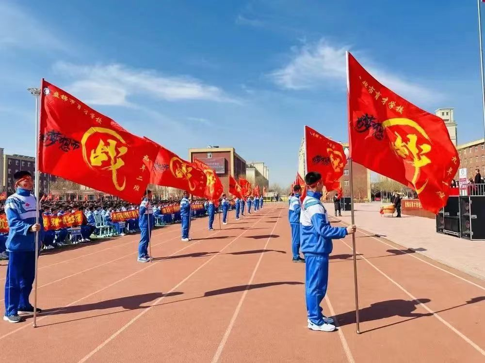

百日竞渡，磨剑十年，六月试锋冲霄汉。
千日苦读，志存万里，一鸣惊人破苍天。
春雷隆隆，万物新生。
莘莘学子，万丈豪情。
十年寒窗，百日征程。
时不我待，分秒必争。
在这充满希望的季节，在这吹响冲刺号角的日子里，盘锦市育才学校于３月１9日举行了九年级“百日宣誓”大会。参加本次宣誓大会的有新兴育才学校张秀霞女士，总校长助理张颖女士，育才学校伦国斌校长，育才初中葛丽媛校长，育才小学张鑫校长，育才初中张宪福副校长，育才学校杨浩宇书记，育才初中于海平主任，育才初中王会主任，七八九年级全体班主任，九年级全体科任教师及八年级全体地生教师
在庄严肃穆的国歌声中，宣誓大会拉开了帷幕。葛校长娓娓道来同学们三年来的顽强坚持与奋斗。她真切地提出了务实的建议，讲述了未来的选择。“不断努力，不留遗憾，上下齐心，成就梦想。”其话语慷慨激昂，振奋人心。她饱含满怀深情，对同学们讲述了她的殷殷期盼。